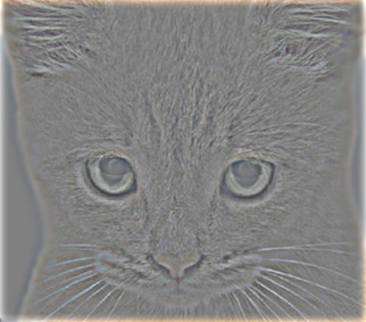
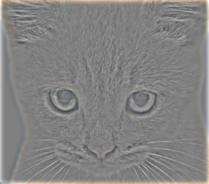
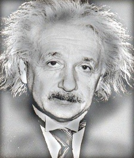
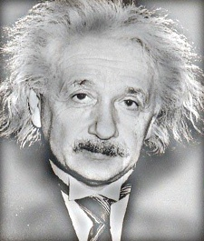
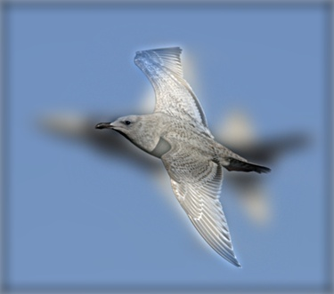
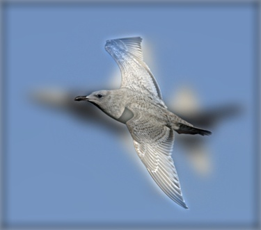

Objective
The goal of this project is to use low-pass and high-pass filters to process two images respectively and then combine them to get a hybrid image. Both grayscale image and color image are supported. Also, three padding methods are used: pad zero, pad replicate and pad symmetric. Besides, Fast Fourier Transform is used to accelerate the convolution.


 



 

 
